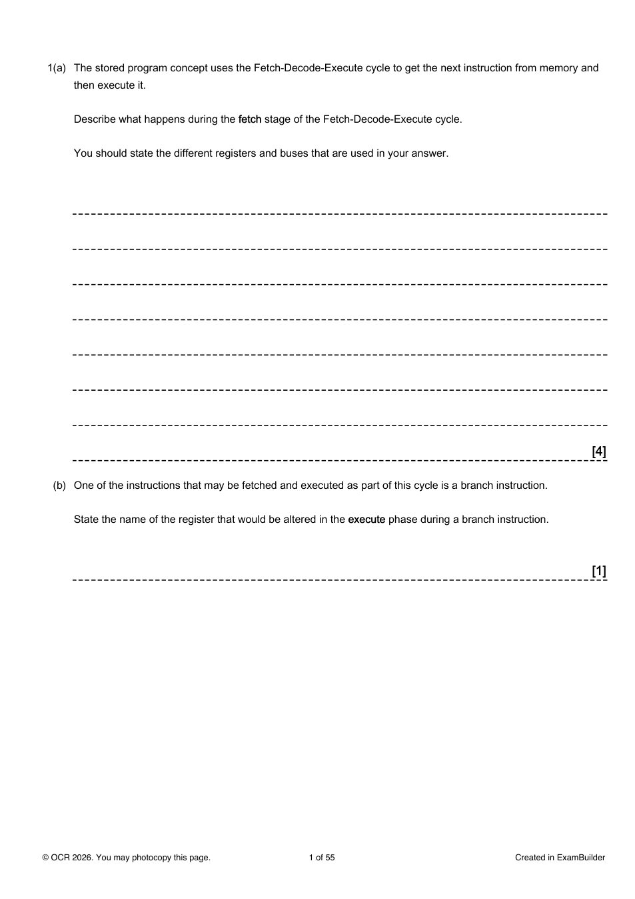

Learning summary
This page summarises the OCR H446 Paper 1 topics from this paper. Use it before attempting the practice tasks.
This page summarises the OCR H446 Paper 1 topics from this paper. Use it before attempting the practice tasks.
Incorrect answers will appear here after you mark questions.
Use the buttons below to keep the exam question on the left and the matching mark scheme page on the right.
